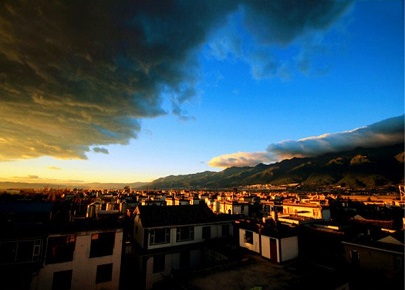

morly旅游网
当四季只剩下春天，当一片土地红得耀眼，当皑皑白雪铺满了雪山，当烈风吹遍飘动的经幡，当彩云又在蓝天浮现，此刻，我已置身彩云之南
云南，简称云（滇），省会昆明，位于中国西南的边陲，北回归线横贯云南省南部，属低纬度内陆地区，为长江经济带重要组成部分，东部与贵州，广西为邻，北部与四川相连，西北部紧依西藏，西部与缅甸接壤，南部和老挝、越南毗邻，云南有25个边境县分别与缅甸、老挝和越南交界，国境线长4060千米，是中国通往东南亚、南亚的窗口和门户。
西汉元封二年（前109年），武帝开西地南夷，置县24，云南为其一。取县名为“云南”有三种说法，一是“彩云南现”说，建县时，县治驻地现云南驿村北面的龙兴和山出现五彩云霞，县城在彩云之南称“云南” [5] ；二是“云山之南”说，云山即（现宾川鸡足山，常凝云气高数丈，县城在云山之南称云南；三是“武帝追梦”说，相传汉武帝夜梦彩云，遣使追梦，在今祥云县境追到彩云，因置云南县 [6-7] 。
云南地处中国西南边陲，位于东经97°31′至106°11′，北纬21°8′至29°15′之间，北回归线横贯本省南部，属低纬度内陆地区。全省东西最大横距864.9千米，南北最大纵距990千米。全省国土总面积39.41万平方千米，东部与贵州省、广西壮族自治区为邻，北部与四川省相连，西北部紧依西藏自治区，西部与缅甸接壤，南部和老挝、越南毗邻。云南有25个边境县分别与缅甸、老挝和越南交界，国境线长4060千米，其中，中缅边界1997千米，中老边界710千米，中越边界1353千米。
云南属山地高原地形，山地面积33.11万平方千米，占全省国土总面积的84%；高原面积3.9万平方千米，占全省国土总面积的10%；盆地面积2.4万平方千米，占全省国土总面积的6.0%。地形以元江谷地和云岭山脉南段宽谷为界，分为东西两大地形区。东部为滇东、滇中高原，是云贵高原的组成部分，平均海拔2000米左右，表现为起伏和缓的低山和浑圆丘陵，发育着各种类型的岩溶（喀斯特）地貌；西部高山峡谷相间，地势险峻，山岭和峡谷相对高差超过1000米。5000米以上的高山顶部常年积雪，形成奇异、雄伟的山岳冰川地貌。全省海拔高低相差很大，海拔最高点海拔6740米，在滇藏交界处德钦县境内怒山山脉的梅里雪山主峰卡瓦格博峰；最低点海拔76.4米，在河口县境内南溪河与红河交汇的中越界河处，两地直线距离约900千米，海拔相差6000多米。
香格里拉
自古就是藏民族最理想的“如意宝地”，藏族民歌唱道：“太阳最早照耀的地方，是东方的结塘，人间最殊胜的净土是0河畔的香格里拉”。香格里拉县位于云南省西北部的滇、川、藏“大三角”区域，是国家“三江并流”风景名胜区的一颗明珠，地处迪庆香格里拉腹心地带。香格里拉是一片人间少有的完美保留自然生态和民族传统文化的净土，素有“高山大花园”、“动植物王国”、“有色金属王国”的美称。万里长江第一湾呈“V”字型包裹着这块全省县级国土面积最大的“如意宝地”，滇藏公路纵贯全境。全县人口13万人。26个民族，其中9个是世居民族。是一个以藏族为主体、地域辽阔、资源丰富的县份。香格里拉共有著名旅游景点24个，是一个自然景观、人文景观的富集区域，是国家八大黄金旅游热线之一。
丽江古城
云南省丽江纳西族自治县的中心城镇，位于云南省西北部，地理坐标为东经100°14′，北纬26°52′。古城位于县境的中部，海拔2400余米。是一座风景秀丽，历史悠久和文化灿烂的名城，也是中国罕见的保存相当完好的少数民族古城。1997年12月3日，联合国教科文组织世界遗产委员会一致通过,将丽江古城列入《世界遗产名录》。丽江古城又名大研镇,坐落在丽江坝中部,它是中国历史文化名城中唯一没有城墙的古城，据说是因为丽江世袭统治者姓木，筑城势必如木字加框而成“困”字之故。丽江古城的纳西名称叫“巩本知”，“巩本”为仓廪，“知”即集市，可知丽江古城曾是仓廪集散之地。丽江古城始建于宋元，盛于明清，明代著名旅行家徐霞客的《滇游日记》曾写丽江古城中木氏土司宫邸“宫室之丽，拟于王者”。
石林
在中国960万平方公里的地地上众多的山川名胜景区中，云南石林以其雄、奇、险、幽的地貌风光独树一帜。在世界溶岩地貌风光中。中国云南石林又以其面积广，岩柱高，小尺度造型见长，一定范围内景点集中而独占鳌头。面对气势磅礴、逶迤连绵的石海，人们会情不自禁地问，这些鬼斧神工的石林是从哪里来的啊！对此，古今中外许多人都走进石林大揭秘的行弄，试图作出完美的回答。科学家说：两三亿年前这里是一片0大海，经过漫长的地质运动和物质进化，才使昔日的茫茫沧海变成了今日的莽莽石林。当地的老百姓说：石林是一位大力神用神鞭像赶着羊群一样从遥远的地方赶来的，本来要赶它们去阻挡肆虐的洪水，不知是神鞭失灵，或还是这群有灵性的石头恋上了这方水土、这方人？行色匆匆的石群，戛然止步，无悔无怨地在这里安了“家”。
玉龙雪山
踏入丽江坝子，出大研古城，往白沙继续北行，玉龙雪山就横峙在前方。终年积雪的山峰由北向南排列成十三个高峰，在蔚蓝的天幕衬托下，宛如玉龙凌空飞舞。当你沿此旅游线深入其中，雪山会展现给你奇花、异树、雪海、冰川、草甸、溪流等无限风光，还有那美丽动人的神话传说，会让你一路留连忘返。“郡北无双岳，南滇第一峰。四时光皎洁，万古势龙从。绝顶星河转，危巅日月通。寒威千里望，玉立雪山崇。”这首五言八句诗是明朝丽江第八代土知府木公（公元1494--1553年）土司写的《题雪山》，诗句豪迈。丽江玉龙雪山自古就是一座壮美的风景雪山，唐朝南诏国异牟寻时代，南诏国主异牟寻封岳拜山，曾封赠玉龙雪山为北岳，至今白沙村北北岳庙尚存，仍然庭院幽深，佛面生辉。拜山朝圣者不绝于途。“主品须立最高品，登山须登最高顶”，到丽江游览，玉龙雪山是必选项目。玉龙雪山，位于丽江坝北边，距丽江县城15公里，山北麓直抵金沙江。
内容整理至网络，如有侵权，请联系我们！1255394075@qq.com